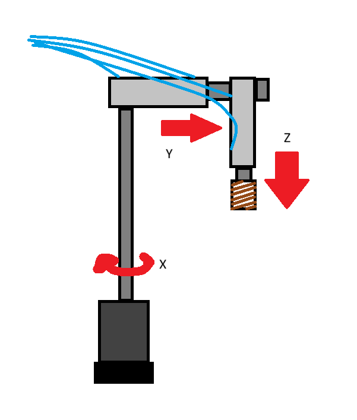
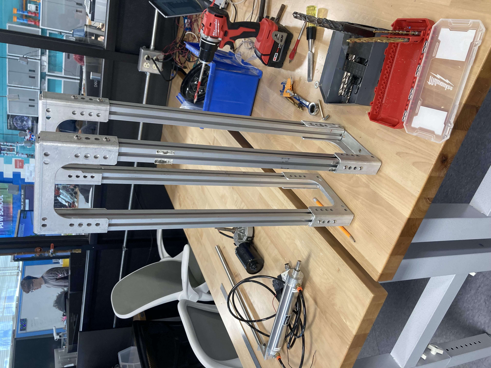
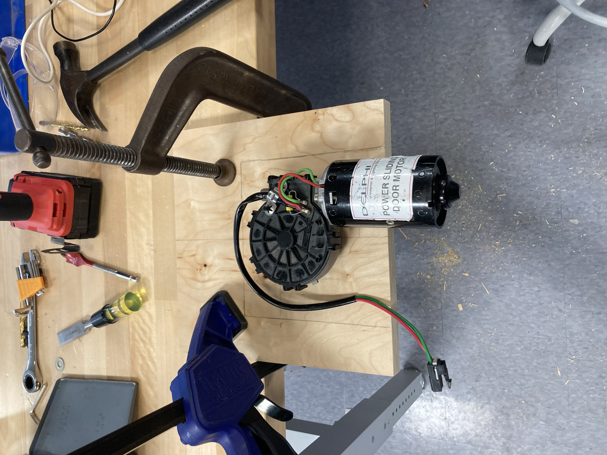
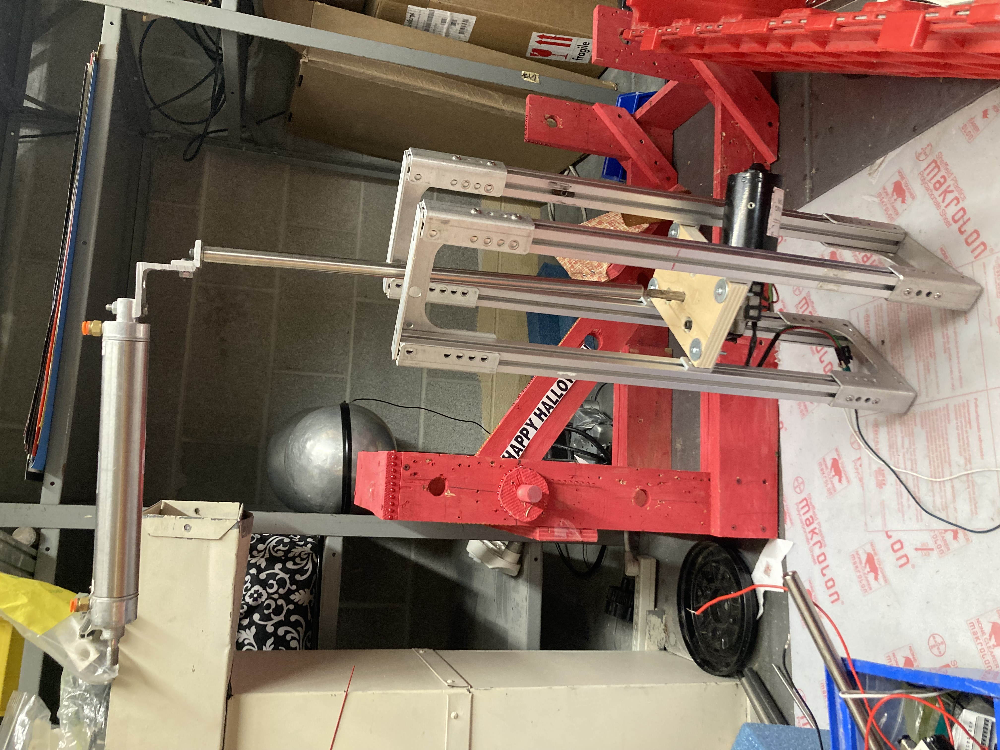
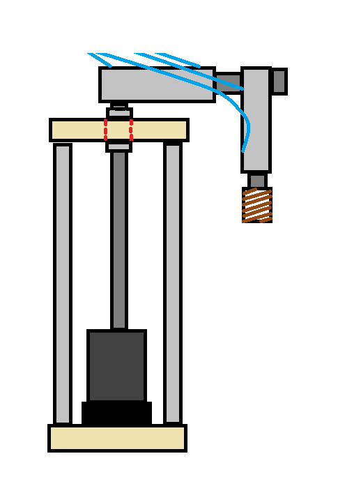

Crane
Description:
3 axis Crane controlled by pneumatic and motor controls.
Goal:
Perform detailed repetitive tasks based on inputs/programs run on the Crane.
Concept:
The goal is that the crane can move in 3 axes like this.

For our rotational X movement we are using a motor and for our other axes we're using pneumatic pistons.
The actuator is going to be an electromagnet. [maybe... I might change my mind]
For controls we are just going to use a PLC. The controls are fairly basic but we are going to need to use relays to isolate the motor from the PLC.
Progress:
Frame:

Motor Holder:

Assembly:

Next Steps:
In our assembly, it is clear that the torque is going to rip the whole thing apart.
Our solution is going to be a bearing at the stop of the frame to hold the axle whilst having it spin smoothly.
